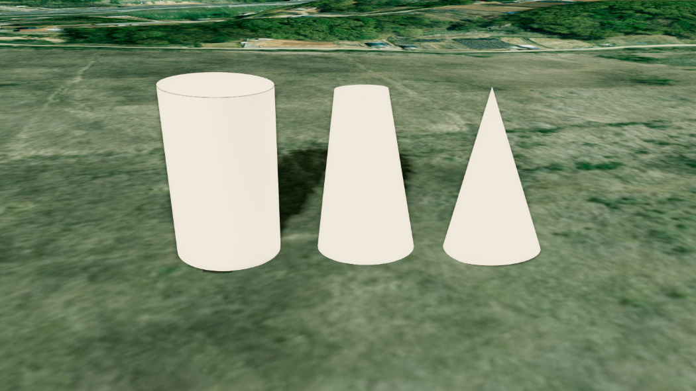

원기둥 (Cylinder)
목차

U3dCylinder는 지정한 좌표에 원기둥을 만듭니다.
윗면과 밑면의 반지름을 따로 정할 수 있어 원기둥뿐 아니라 원뿔과 원뿔대도 같은 클래스로 만듭니다.
관정, 저장탱크, 기둥 구조물처럼 단면이 원인 시설물을 표현할 때 사용합니다.
1. 원기둥 생성하기
U3dCylinder 생성자로 객체를 만들고, U3dVectorLayer.addGeometry로 레이어에 등록한 뒤 위치를 지정하면 화면에 표시됩니다.
레이어를 만들고 도형을 등록·제거하는 방법은 3D Geometry 시작하기 - 도형 등록하고 제거하기에서 설명합니다.
반지름과 길이의 단위는 미터입니다.
API
U3dCylinder(opt) : 원기둥 객체를 생성하는 생성자
매개변수
opt(object) : 원기둥 생성 옵션opt.name(string) : 객체 이름. 지정하지 않으면 자동으로 생성됩니다opt.radiusTop(number) : 윗면 반지름(m). 기본값:5opt.radiusBottom(number) : 밑면 반지름(m). 기본값:5opt.height(number) : 길이(m). 기본값:20opt.radialSegments(number) : 원둘레 분할 수. 최소3. 기본값:32opt.heightSegments(number) : 길이 방향 분할 수. 최소1. 기본값:1opt.openEnded(boolean) : 윗면과 밑면을 열어 둘지 여부. 기본값:falseopt.thetaStart(number) : 단면 원을 그리기 시작하는 각도(라디안). 기본값:0opt.thetaLength(number) : 단면 원을 그릴 각도 범위(라디안). 지정하지 않으면 한 바퀴(Math.PI * 2)opt.color(ColorRepresentation) : 색상. 기본값:'#ff0000'opt.opacity(number) : 투명도(0~1). 기본값:0.7opt.outline(boolean) : 외곽선 표시 여부. 기본값:trueopt.lineColor(ColorRepresentation) : 외곽선 색상. 기본값:'#000000'opt.wireframe(boolean) : 와이어프레임 표시 여부. 기본값:falseopt.type('basic' | 'topimage' | 'standard') : 재질 타입. 기본값:'basic'opt.topimageurl(string) : 윗면 이미지 URL.type이'topimage'일 때만 사용됩니다opt.coordinates(Array<GeoPositionVector3>) : 위치 좌표 배열 (위경도, EPSG:4326)opt.properties(KeyValue) : 사용자 정의 속성정보
1. 원기둥 생성 예제
반지름 6m, 길이 30m의 원기둥을 만들어 배치하는 예제입니다.
관정이나 기둥 구조물처럼 단면이 원인 시설물의 기본 형태입니다.
const app = new GeOnDT.U3dAPP({containername: 'map'});
const vectorLayer = new GeOnDT.vector.U3dVectorLayer({name: 'vector'});
const cylinder = new GeOnDT.geom.U3dCylinder({
name: 'cylinder_01',
radiusTop: 6,
radiusBottom: 6,
height: 30,
radialSegments: 32,
color: '#2b448b'
});
vectorLayer.addGeometry(cylinder); // 벡터 레이어에 등록
cylinder.setPosition(126.9393, 37.5194, 30); // 위경도 좌표에 배치
2. 위치와 방향 지정하기
원기둥은 중심 좌표 하나를 기준으로 놓입니다.
위치는 setPosition에 위경도와 고도(m)를 넣어 지정하며, 고도는 원기둥의 중심이 기준입니다.
지형 높이를 자동으로 조회하거나 따라가지 않으므로, 지면에 맞추려면 그 지점의 지형 고도를 더합니다.
지형 고도는 app.getHeightAtGeographicPoint({x, y})로 조회하며, 지형 로딩이 끝난 뒤에 호출해야 실제 값을 얻습니다.
만들어진 원기둥의 축은 남북(y축) 방향입니다.
기본 상태에서는 지면에 누운 모습이며, 수직으로 세우려면 setRotation으로 x축 기준 90도 돌립니다.
API
U3dCylinder.setPosition(x, y, z) : 위경도 좌표로 위치를 지정하는 함수
매개변수
x(number | Vector3) : 경도.Vector3를 넘기면 좌표 객체 하나로 지정합니다y(number) : 위도z(number) : 높이(m)
API
U3dCylinder.getPositions() : 지정된 위경도 좌표 배열을 반환하는 함수
반환값
return(Array<GeoPositionVector3>) : 위경도 좌표 배열 (EPSG:4326)
API
U3dCylinder.getVertex() : 변환된 월드 좌표 배열을 반환하는 함수
반환값
return(Array<WorldPositionVector3>) : 좌표 배열 (월드 좌표, EPSG:3857)
API
U3dCylinder.setRotation(rotation) : 객체의 회전값을 지정하는 함수
매개변수
rotation(Euler) : 회전값(라디안)
1. 위경도로 배치하는 예제
고도 30m 지점에 원기둥 중심을 놓는 예제입니다.
실제로는 app.getHeightAtGeographicPoint로 읽은 지형 고도를 기준으로 값을 정합니다.
vectorLayer.addGeometry(cylinder);
cylinder.setPosition(126.9393, 37.5194, 30);
console.log(cylinder.getPositions()); // [Vector3 {x: 126.9393, y: 37.5194, z: 30}]
2. 수직으로 세우는 예제
세운 원기둥의 밑면을 지면에 맞추려면 지형 고도에 길이의 절반(height / 2)을 더합니다.
cylinder.setRotation(new THREE.Euler(Math.PI / 2, 0, 0)); // 축을 수직으로
// 지형 고도가 16m인 지점에 밑면을 맞춥니다.
cylinder.setPosition(126.9393, 37.5194, 16 + cylinder.height / 2);
3. 크기와 세그먼트 조절하기
생성 후에 크기를 바꾸려면 setParam에 바꿀 값만 담아 전달합니다.
전달한 값만 반영되고 나머지는 기존 값이 유지되며, 형태 관련 값을 바꾸면 지오메트리가 즉시 다시 만들어집니다.
radialSegments는 원둘레를 몇 각형으로 나눌지 정하는 값입니다.3이면 삼각기둥, 8이면 팔각기둥이 되고 32 이상이면 원기둥처럼 보입니다.
heightSegments는 길이 방향 분할 수입니다.
겉모양은 그대로이고 정점만 늘어납니다.
API
U3dCylinder.setParam(param) : 여러 속성을 한 번에 갱신하는 함수
매개변수
param(object) : 변경할 속성 객체param.radiusTop(number) : 윗면 반지름(m)param.radiusBottom(number) : 밑면 반지름(m)param.height(number) : 길이(m)param.radialSegments(number) : 원둘레 분할 수param.heightSegments(number) : 길이 방향 분할 수param.openEnded(boolean) : 윗면과 밑면을 열어 둘지 여부param.thetaStart(number) : 단면 원을 그리기 시작하는 각도(라디안)param.thetaLength(number) : 단면 원을 그릴 각도 범위(라디안)param.color(ColorRepresentation) : 색상param.opacity(number) : 투명도(0~1)param.outline(boolean) : 외곽선 표시 여부param.lineColor(ColorRepresentation) : 외곽선 색상param.wireframe(boolean) : 와이어프레임 표시 여부param.shadow(boolean) : 그림자 사용 여부
API
U3dCylinder.getParam() : 현재 속성을 반환하는 함수
반환값
return(object) : 반지름·길이·세그먼트·외곽선 등 현재 속성 객체
1. 크기 변경 예제
반지름과 길이를 한 번에 바꾸는 경우입니다.
윗면과 밑면 반지름을 같은 값으로 주면 곧은 원기둥이 유지됩니다.
cylinder.setParam({radiusTop: 10, radiusBottom: 10, height: 50});
2. 원뿔과 원뿔대 예제
윗면 반지름을 0으로 두면 원뿔이 되고, 두 반지름을 다르게 주면 원뿔대가 됩니다.
cylinder.setParam({radiusTop: 0, radiusBottom: 12}); // 원뿔
cylinder.setParam({radiusTop: 4, radiusBottom: 12}); // 원뿔대
3. 각기둥 예제
radialSegments를 낮추면 각기둥이 됩니다.
육각 맨홀이나 팔각 기둥처럼 단면이 다각형인 시설물에 사용합니다.
cylinder.setParam({radialSegments: 6}); // 육각기둥
4. 현재 속성 확인 예제
속성으로 직접 읽거나 getParam으로 한 번에 가져옵니다.getParam이 돌려준 객체는 다른 원기둥의 setParam에 그대로 넘겨 같은 모양으로 맞출 수 있습니다.
console.log(cylinder.radiusTop, cylinder.height); // 4 50
const param = cylinder.getParam();
console.log(param.radialSegments, param.outline);
4. 일부만 그리기
각도 옵션 두 개와 openEnded로 원기둥의 일부만 그릴 수 있습니다.
thetaLength: 단면 원을 그릴 각도 범위입니다.Math.PI면 반원기둥,Math.PI / 2면 4분의 1만 그려집니다thetaStart: 그리기 시작하는 각도입니다. 잘려 나간 쪽이 어느 방향을 보게 할지 정합니다openEnded:true면 윗면과 밑면을 덮지 않아 속이 빈 관이 됩니다
thetaStart는 thetaLength가 한 바퀴보다 작을 때만 효과가 있습니다.
1. 반원기둥 예제
thetaLength를 반 바퀴로 줄여 단면이 드러나는 반원기둥을 만듭니다.
관 내부를 보여주거나 절개면을 표현할 때 사용합니다.
const half = new GeOnDT.geom.U3dCylinder({
radiusTop: 10,
radiusBottom: 10,
height: 40,
thetaLength: Math.PI, // 한 바퀴의 절반만
color: '#3498db'
});
vectorLayer.addGeometry(half);
half.setPosition(126.9393, 37.5194, 30);
2. 뚜껑 없는 관 예제
openEnded를 켜면 윗면과 밑면이 덮이지 않아 속이 빈 관이 됩니다.
관로의 끝단을 드러내야 할 때 사용합니다.
cylinder.setParam({openEnded: true});
5. 색상과 투명도 설정하기
색상은 setColor, 투명도는 setOpacity로 바꿉니다.
두 함수 모두 재질에 즉시 반영됩니다.
색상 값은 '#ff0000' 같은 hex 문자열, 'rgb(255,0,0)' 문자열, 0xff0000 숫자, THREE.Color 객체를 모두 받습니다.
setOpacity는 값이 1 미만이면 반투명 처리를 자동으로 켜고 1이면 끕니다.
API
U3dCylinder.setColor(color) : 색상을 설정하는 함수
매개변수
color(ColorRepresentation) : 색상 값
API
U3dCylinder.setOpacity(opacity) : 투명도를 설정하는 함수
매개변수
opacity(number) : 투명도(0~1).0이면 완전 투명,1이면 불투명
API
U3dCylinder.setTransparent(val) : 재질의 반투명 처리를 켜는 함수
매개변수
val(boolean) : 반투명 처리 사용 여부
1. 색상과 투명도 변경 예제
상태별로 색을 달리하거나, 안쪽이 비쳐 보이도록 투명도를 낮출 때 사용합니다.
cylinder.setColor('#00b3ff');
cylinder.setOpacity(0.4);
2. 와이어프레임 표시 예제
면을 채우지 않고 뼈대만 표시합니다.
세분화 값을 확인하거나 겹친 도형의 구조를 볼 때 잠시 켜서 씁니다.
cylinder.setParam({wireframe: true});
6. 외곽선 표시하기
원기둥은 외곽선이 기본으로 켜져 있습니다.
윗면과 밑면의 테두리처럼 면이 크게 꺾이는 모서리에만 선이 그려지고, 매끄럽게 이어지는 옆면에는 그려지지 않습니다.
외곽선 색상은 setLineColor로 바꿉니다.
API
U3dCylinder.setLineColor(lineColor) : 외곽선 색상을 설정하는 함수
매개변수
lineColor(ColorRepresentation) : 외곽선 색상
API
U3dCylinder.getLineColor() : 외곽선 색상을 반환하는 함수
반환값
return(ColorRepresentation) : 외곽선 색상
1. 외곽선 제어 예제
원기둥은 외곽선이 기본으로 켜져 있어 윗면과 밑면 테두리가 드러납니다.
배경과 색이 비슷할 때는 외곽선 색을 바꿔 형태를 살립니다.
cylinder.setLineColor('#ffffff'); // 외곽선 색상 변경
cylinder.setParam({outline: false}); // 외곽선 제거
7. 윗면에 이미지 입히기
type을 'topimage'로 두고 topimageurl에 이미지 주소를 넣으면 윗면에만 이미지가 입혀집니다.
옆면과 밑면은 color로 지정한 단색이 유지됩니다.
type은 생성할 때만 지정할 수 있습니다.setParam으로는 바꿀 수 없습니다.
'standard'를 지정하면 조명을 받는 표준 재질을 사용해 면마다 밝기가 달라집니다.
1. 윗면 이미지 예제
저장탱크 상판처럼 윗면에만 다른 재질이 필요한 경우입니다.
옆면과 밑면은 color로 지정한 단색이 유지됩니다.
const tank = new GeOnDT.geom.U3dCylinder({
name: 'tank_01',
radiusTop: 15,
radiusBottom: 15,
height: 12,
color: '#cccccc',
type: 'topimage',
topimageurl: 'image/marker.png'
});
vectorLayer.addGeometry(tank);
tank.setPosition(126.9393, 37.5194, 30);
8. 속성정보와 해제
도형에는 id, 이름, 업무 데이터 같은 부가 정보를 key-value 형태로 담아 둘 수 있습니다.
새 속성을 넣을 때는 addProperties, 기존 값을 바꿀 때는 changeProperties, 전체를 통째로 교체할 때는 setProperties를 사용합니다.
더 이상 쓰지 않는 원기둥은 dispose로 정리합니다.
API
U3dCylinder.getProperties() : 사용자 정의 속성정보를 반환하는 함수
반환값
return(KeyValue) : 사용자 정의 속성정보
API
U3dCylinder.setProperties(input) : 사용자 정의 속성정보 전체를 설정하는 함수
매개변수
input(KeyValue | string) : 속성 객체 또는 JSON 문자열
API
U3dCylinder.addProperties(key, value) : 속성정보를 하나 추가하는 함수
매개변수
key(string) : 속성 식별키value(*) : 속성 값
API
U3dCylinder.changeProperties(key, value) : 기존 속성정보의 값을 변경하는 함수
매개변수
key(string) : 변경할 속성 식별키value(*) : 속성 값
API
U3dCylinder.removeProperties(key) : 속성정보를 제거하는 함수
매개변수
key(string) : 제거할 속성 식별키
API
U3dCylinder.setShadow(enabled) : 그림자 사용 여부를 설정하는 함수
매개변수
enabled(boolean) : 그림자 사용 여부. 기본값:true
API
U3dCylinder.isShadow() : 그림자 사용 여부를 반환하는 함수
반환값
return(boolean) : 그림자 사용 여부
API
U3dCylinder.getUid() : 원기둥의 고유 식별자를 반환하는 함수
반환값
return(number) :userData.id가 지정되어 있으면 그 값, 없으면 내부 객체 id
API
U3dCylinder.dispose() : 원기둥과 관련 리소스를 해제하는 함수
1. 속성정보 다루기 예제
cylinder.addProperties('시설명', '제1저수정');
cylinder.addProperties('관리번호', 'C-0107');
cylinder.changeProperties('시설명', '제2저수정'); // 기존 값 변경
cylinder.removeProperties('관리번호'); // 속성 제거
console.log(cylinder.getProperties()); // {시설명: '제2저수정'}
2. 해제 예제
레이어에서 먼저 제거한 뒤 해제합니다.
vectorLayer.removeGeometry(cylinder);
cylinder.dispose();